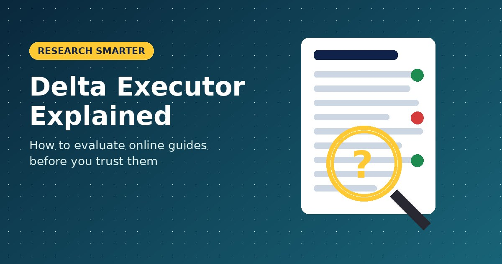
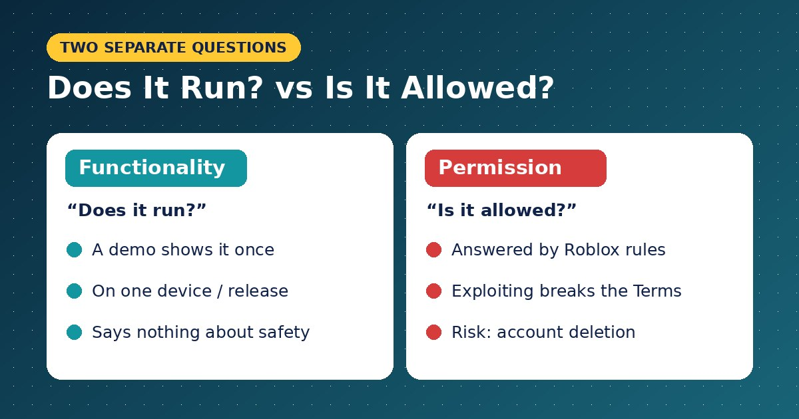
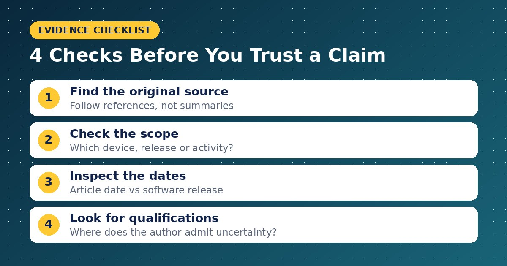

Delta Executor Explained: How to Evaluate Online Guides

A Delta Executor tutorial can look convincing while leaving important questions unanswered. Who published it? Which software version does it describe? Does “working” mean compatible, permitted, or simply demonstrated once? If you found http://www.deltaexecutorees.com/ while researching the topic, understanding these distinctions will help you read more critically. Delta Executor is marketed as a third-party script execution tool for Roblox. Before relying on related instructions, separate the website’s explanations from independently verified facts, and check whether the activity matches your goal and Roblox’s rules.
Start With What a Script Executor Means
A script is a collection of instructions that makes software perform actions. Delta Executor pages advertise the ability to run scripts within Roblox through an external tool. That description explains the advertised function; it does not establish that every advertised feature works.
Roblox also supports scripting through its own development tools. Its Creator Hub explains that scripts use Luau, a language derived from Lua 5.1, to add behavior to experiences. Sharing scripting terminology does not make an external executor equivalent to Roblox’s development environment.
For beginners, the useful question is therefore: “Am I trying to create something, or change how an existing experience behaves?”
Identify Who Is Providing the Information
Search-indexed descriptions from deltaexecutorees.com identify it as an independent guide website. Its indexed disclaimer states that it is not the official Delta Executor website and is not affiliated with Roblox Corporation.
An independent publisher can organize information, explain unfamiliar terms, and discuss common questions. However, readers should distinguish editorial explanations from developer release notes and platform policies.
Look for clear attribution. “The publisher reports support for this device” is a narrower claim than “this works on every device.” The first identifies a source; the second requires considerably more evidence.
Read Compatibility Claims as Specific Claims
Compatibility should answer a precise question: which release is described as working with which environment? Broad labels such as “PC support” or “mobile version” leave too much unresolved.
A helpful guide should identify:
- The operating system and relevant version requirements.
- The software release discussed.
- Whether another application is required.
- The date and source of compatibility information.
- Known limitations or unresolved problems.
Consider a hypothetical article showing a successful demonstration on one phone. That example cannot establish support for every Android device, and it says nothing about a Windows installation.
When details are missing, record the uncertainty instead of assuming that similar devices behave identically. This makes comparisons more useful and prevents a vague headline from becoming an unsupported conclusion.
Separate Functionality From Account Permission
Whether software runs and whether Roblox permits the activity are separate questions. In its official “Cheating and Exploiting” guidance, Roblox states that cheating and exploiting violate its Terms of Use and can lead to account deletion. It also warns that exploit scams may distribute malware or steal personal information.

Consequently, a video showing successful execution answers only a narrow functionality question. It does not establish compliance with platform rules or prove the safety of a download.
Likewise, an “educational purposes” disclaimer describes a publisher’s stated intention. It should not be interpreted as permission from Roblox. Consult the platform’s own guidance when evaluating what is allowed.
Use a Simple Evidence Checklist
Before accepting an important claim, work through four checks:

- Find the original source. Follow references rather than relying entirely on summaries.
- Check the scope. Identify exactly which device, release, or activity the evidence covers.
- Inspect the dates. Distinguish an article’s editing date from the underlying software release.
- Look for qualifications. Notice where the author acknowledges uncertainty or missing verification.
Suppose a page changes its headline to include a new year but provides no updated documentation. The headline alone does not demonstrate that the instructions were retested.
Use the same approach when comparing guides. Prefer clear evidence and honest limitations over confident language. Several pages repeating one claim do not necessarily represent several independent confirmations.
Keep Account Credentials Outside Third-Party Tutorials
In its “Keep Your Account Safe” guidance, Roblox advises users not to share passwords, browser cookies, verification codes, or backup codes. It also recommends unique passwords and two-step verification.
Treat any request for these details as separate from the article you intended to read. Roblox says login information should be entered through its official website or official applications, not unrelated forms.
Choose a Learning Path That Matches Your Goal
If programming interests you, begin with Roblox Studio and the Creator Hub’s scripting resources. A small project, such as a door that opens or a button that changes an object’s color, gives you a concrete reason to learn scripting concepts.
Write down the intended behavior, build one part, and test it before adding complexity. For ordinary play, follow Roblox’s rules. For research, use independent guides as starting points and verify consequential claims before acting on them. Choose the next step based on your purpose, not the strongest promotional claim.